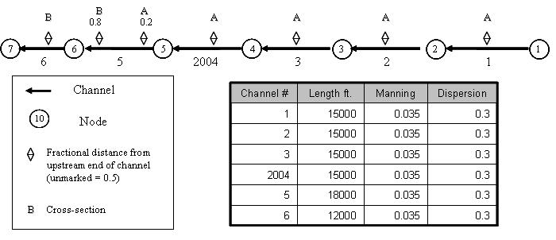
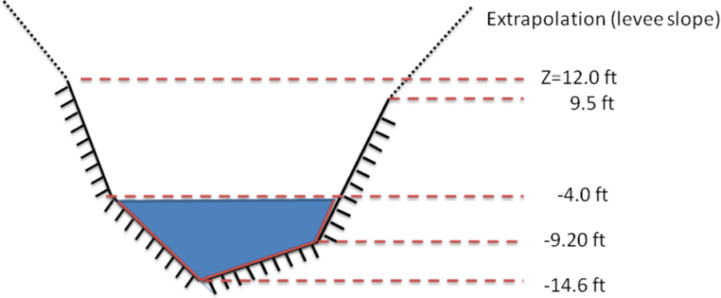
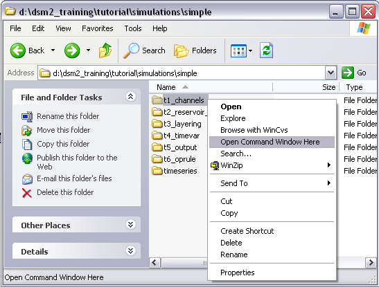
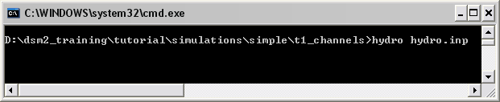

Tutorial 1: Channels
Task
Run DSM2 for a steady boundary condition flow and salinity
(EC-electrical conductivity) simulation for a simple straight channel
grid
Skills Gained
-
Get started with DSM2
-
Creating channels
-
Establishing initial and boundary conditions
The purpose of this tutorial is twofold: to get a start with the DSM2 model and to get practice setting up channels. We will set up a simple channel-only grid with simple constant boundary conditions and run both HYDRO and QUAL. We will look at two formats for entering cross-section geometry (the new DSM2 single file format and CSDP [Cross Section Development Program] format) and we will familiarize ourselves with the echo output file that gives you a single-file complete record of all the input data used in a DSM2 module.
For the tutorial, the channels have the following configuration and specifications:

/>
Figure 1 - Simple channel configuration and specifications.
Note that there are two cross-section geometries labeled A and B which will be specified later in this tutorial. In all the channels except Channel 5 the cross sections have been assigned at the midpoint of the channel. In Channel 5 the cross-sections are assigned at fractions 0.2 and 0.8 of the length of the channel measured from the upstream end. The DSM2 grid map includes arrows pointing from upstream to downstream, indicating the positive direction of flow.Overview of DSM2 Channel Cross Sections
DSM2 assumes a piecewise linear cross-sectional bathymetry. Width, area and wetted perimeter are tabulated according to elevation. Each elevation lists the data (width) or cumulative data (wetted perimeter and area) below the given elevation. Anything above the top elevation is extrapolated using a slope given by a global scalar called levee_slope.

Figure 2: Piecewise linear bathymetry
For instance, for a cross section half way downstream in a fictitious channel 123 the five layers of a cross-section with elevations given by Figure 2, might be tabulated:XSECT_LAYER CHAN_NO DIST ELEV AREA WIDTH WET_PERIM 123 0.5 -14.6 0.0 0.0 0.0 123 0.5 -9.2 216.0 80.0 102.5 123 0.5 -4.0 736.0 120.0 111.0 123 0.5 9.5 2410.0 160.0 142.3 123 0.5 12.0 3028.5 162.0 148.0The above table is in the single-file DSM2 cross-section format. An analogous table is produced by the Cross Section Development Program (CSDP). We will practice using both in the tutorial. The parameter levee_slope is seldom changed from its standard value of 0.33.
The following steps will instruct you on how to create the channels, give them very simple boundary conditions and run the model.
-
Open the hydro input file and add parameters:
- For this tutorial, you will want to use Notepad++ (recommended https://notepad-plus-plus.org/), Textpad or Emacs – some text editor that will not add special markup to your input.
- Navigate to the ${DSM2_home}\tutorial\simple\t1_channels directory and this directory will be referred to as the tutorial directory below.
- Open the hydro.inp file using one of the text editors recommended in 1a.
-
In HYDRO, add the Scalar Runtime information:
-
DSM2 input files use a keyword based table structure. Each table begins with a keyword on the first line and column headings (called field headers) on the second line. There are as many lines of data as needed in the middle of the table, and the table closes with an "END" line and a carriage return.
-
In the hydro.inp file, locate the SCALAR table. Scalars are name-value pairs that control the model or define constants and runtime parameters. Some scalar parameters are already defined in the sample file.
-
Add the following run date, run time and temporary directory scalars at the top of the SCALAR table and save.
 Spaces or tabs can be used between values
Spaces or tabs can be used between values
SCALAR NAME VALUE run_start_date 01JAN1992 #scalars to be added run_end_date 01MAR1992 #scalars to be added run_start_time 0000 #scalars to be added run_end_time 0000 #scalars to be added temp_dir c:/temp title "TUTORIAL SIMULATION ${DSM2MODIFIER}" # [other scalars already included in the file] warn_unchecked false ENDNote that temp_dir should be set to a location with ample disk space for production runs. This is a scratch directory where DSM2 stores cached results.
-
-
*In HYDRO, add Channel information:
*Next we will add a table of channels, including connectivity, and conveyance/dispersion parameters. We are also going to add the cross-section geometry using the XSECT_LAYER section, which is introduced in Version 8. (CSDP-styled input is discussed later).
-
The CHANNEL table requires: a channel number, length, Manning's n, dispersion coefficient, node number to identify the upstream end and node number at the downstream end. Type the table and field headers for the CHANNEL table at the bottom of the hydro.inp file:
CHANNEL CHAN_NO LENGTH MANNING DISPERSION UPNODE DOWNNODE -
Open the file channel_tutorial_starter.txt and copy the data for channels 1-6 and channel 2004 from the CHANNEL table of the tutorial data file and paste it into the newly created CHANNEL table in your hydro.inp file.
-
Type END after the last row to end the table.
-
Now create the XSECT_LAYER, table which will contain one row for every vertical layer in every user-defined cross-section. This table is new in Version 8, and is intended to allow input to be represented in a single file and using a single input style – making archives and comparisons simpler. Below the CHANNEL table, create the skeleton for the XSECT_LAYER table:
XSECT_LAYER CHAN_NO DIST ELEV AREA WIDTH WET_PERIM [data will go here] END
Typically in DSM2 input files, the order of the
tables is not important. However, when one table refers to information
defined in another table, the "parent" table with the definition
typically appears first in the input file. In this case the CHANNEL
table must be before the XSECT_LAYER table.
-
In the first row, we will start defining a cross-section for channel #1. We will be entering three rows for Channel 1, each of which will have a "1" in the CHAN_NO column. The data will be located midway downstream along the channel, so in the Distance (fraction) field, type 0.5. The three rows of data are given below
XSECT_LAYER CHAN_NO DIST ELEV AREA WIDTH WET_PERIM 1 0.5 -24.0 0.0 40.0 40.0 1 0.5 0.0 960.0 80.0 102.5 1 0.5 20.0 2640.0 160.0 192.0 -
Copy and paste the three rows of data for Channel 1 three times for Channels 2, 3 and 2004 and change the channel number. Note that changing the channel number to 2004 will shift the data so that it no longer lines up with rows above it. DSM2 reads the values in order and doesn't care about the spacing, but you can adjust the spacing for aesthetic reasons if you want and later we will encounter dsm2_tidy a utility for tidying up the tables automatically. Copy the three data lines one more time for Channel 5, this time changing the Channel number to 5 and the distance to 0.2.
-
There is an additional cross-section given for Channel 5, cross-section "B". The cross section is located in Channel 5, 0.8 of the way from the upstream end to the downstream end as indicated on the schematic at the beginning of the tutorial. Enter the cross section as shown below.
XSECT_LAYER CHAN_NO DIST ELEV AREA WIDTH WET_PERIM 5 0.8 -20.0 0.0 60.0 60.0 5 0.8 -4. 1120.0 80.0 97.74 5 0.8 2.0 1660.0 100.0 121.06 5 0.8 10.0 2700.0 160.0 183.16 -
Copy the cross section data from Channel 5 Distance 0.8 to use it for Channel 6, but change the Distance to 0.5.
Make sure the table is terminated with an END line with a carriage
return and save your file.
-
-
**In HYDRO, set the Boundary information:
**In this section we are going assign very simple boundary conditions to the upper and lower ends of the channel system.
Note that if you do not set boundary conditions at the end of a
channel, a "no-flow" boundary (Q=0.0) is assumed.-
The upstream boundary will be a constant inflow.
-
In hydro.inp, enter an input table for the inflow:
BOUNDARY_FLOW NAME NODE SIGN FILLIN FILE PATH upstream_flow 1 1 last constant 200. ENDThis line assigns a constant inflow of 200.0 cfs to the upstream boundary. The NAME column will be used 1) to associate quality inputs with inflows and 2) for prioritizing data in multiple input files. The NODE field assigns the input to Node #1. The FILLIN field is an instruction to the model as to how to interpolate data in time, which is not relevant for a constant value.
DSM2 assumes consistent units and typically simulates flows in
cfs. -
Start an input table for the downstream stage boundary: The headers FILE and PATH are more intuitive for time varying boundary conditions where a file name and a file location (path) are specified for a file that contains the time varying information. For a constant boundary condition FILE is set to "constant" and PATH is set to the boundary condition value
-
The downstream boundary will be a constant water surface (stage) boundary.
BOUNDARY_STAGE NAME NODE FILLIN FILE PATH [data go here] END -
In the BOUNDARY_STAGE table, enter the following values into the appropriate fields and save:
Although spaces or tabs can be used, columns with spaces tend to
look better when opened in a different viewer. You can use the
dsm2_tidy utility to clean up columns and spaces. Type dsm2_tidy
--help at a command prompt for more info.-
-
-
Input Name: downstream_stage
-
Node: 7
-
Fillin: Last
-
Input File: constant
-
Path/Value: 0.0
-
END the table and save the file.
-
-
-
-
*In HYDRO, set the Initial Conditions for stage and flow:
* A default hydrodynamic initial condition is required for every
channel in DSM2.
The initial condition can be replaced using a restart file, but the default must still be entered now. For each of the channels, the stage and flow will be set to 0. These 0-values will be applied at both the 0 and length (distance to downstream end of channel) distances along the channel. With six channels, and two locations to set the values, there will be a total of 12 rows.-
- In the hydro.inp file, start the initial condition table:
CHANNEL_IC
CHAN_NO DISTANCE STAGE FLOW
1 0 0.0 0.0
1 length 0.0 0.0
[further data will go here]
END
Copy the two lines of data and paste them into the input file for all of the channels. Refer back to Figure 1 for the channel numbers.
-
-
**In HYDRO, Specify the Output Locations:
****Lastly, we specify the output locations. For this tutorial, we will request flow and stage at the two boundaries, two locations along Channel 2, and the beginning of Channel 2004. These choices will be used to illustrate some points in a later tutorial when we look at Layering. Feel free to add anything that interests you.
-
- In hydro.inp, create the skeleton OUTPUT_CHANNEL table using the following header:
OUTPUT_CHANNEL
NAME CHAN_NO DISTANCE VARIABLE INTERVAL PERIOD_OP FILE
[data will go here]
END -
- The output request rows may be found in the file output_channel_tutorial.inp. Copy them into hydro.inp.
- Save and close the hydro.inp file.
-
-
In **QUAL, add the Scalar Runtime information:
**-
- The file qual.inp already has a SCALAR section. Add the following run time and temporary directory SCALARS above the others:
SCALAR
NAME VALUE
run_start_date 02JAN1992
run_end_date 01MAR1992
run_start_time 0000
run_end_time 0000
temp_dir c:/temp
[Existing scalars]
END
-
-
*In QUAL, set the Boundary Concentration information:
*-
- Boundary conditions in QUAL for the constituent ec are specified in the NODE_CONCENTRATION table:
NODE_CONCENTRATION
NAME NODE_NO VARIABLE FILLIN FILE PATH
END
The names of the inputs must be EXACTLY the same as given in hydro –
this is how input concentrations are matched with input flows.-
-
In the Node Concentration table, add an upstream concentration row. The name for this boundary condition must match the corresponding boundary in hydro – this name-matching is how flows and concentrations are paired. See section 2.b for the NAME used in this tutorial and Figure 1 for the node numbers. In the new row, enter the following information into the appropriate fields: 1. 1. Input Name: upstream_flow. 2. Node: 1 3. Variable: ec 4. Fillin: last 5.
The period after the value is to indicate it is not
an integer.Input File: constant
6. Path/Value: 200 DSM2 does not care what units are used for constituent
concentrations, but all concentrations must be in the same units.
For ec, uS/cm are typically used.
-
-
- In the Node_Concentration table in qual.inp, add a downstream boundary concentration row. The downstream concentration is going to be higher than the upstream one since we are later going to turn this into a tidal boundary in a later tutorial. Enter the following information into the next row of the table: 1. 1. Input Name: downstream_stage. 2. Node: 7 3. Variable: ec 4. Fillin: last 5. Input File: constant 6. Path: 30000
- Save the current settings.
-
-
*In QUAL, Specify Output Locations:
*In QUAL, you can request
1) concentration data, 2) concentration data with source tracking or 3) flow and stage data (which can be confusing if not output at the model time step). In this tutorial, our requests will include ec at the two boundaries, two locations along Channel 2, and the beginning of Channel 2004.-
- In qual.inp, create a QUAL Output table:
- In the OUTPUT_CHANNEL table, add the following lines:
OUTPUT_CHANNEL
NAME CHAN_NO DISTANCE VARIABLE INTERVAL PERIOD_OP FILE
bnd_1 1 0 ec 15min inst ${QUALOUTDSSFILE}
bnd_6 6 length ec 15min inst ${QUALOUTDSSFILE}
chan2_half 2 7500 ec 15min inst ${QUALOUTDSSFILE}
chan2_length 2 length ec 15min inst ${QUALOUTDSSFILE}
chan2004 2004 0 ec 15min inst ${QUALOUTDSSFILE}
END -
- Save and close the file.
-
-
*Running HYDRO and QUAL
*DSM2v8 runs hydro and qual sequentially. The hydrodynamic data from the hydro run is an input to the qual simulation.
Hydro can be run without qual, but can qual be run without hydro?
The DSM2 tutorials assume that you have activated Microsoft's power
tool Open Command Window Here. To get this and other
recommended 3rd party extras for DSM2, go to
the Recommended Third Party Extras section of the DSM2
documentation by clicking on the START menu and selecting START
MENU
Programs DSM2_v8 DSM2_documentation
If you do not want to install the Open Command Window Here tool, then you can use a command shell and change directories to the indicated directory. To open a command shell, click on the START menu and select Run. In the box type cmd if it does not come up as the default. Click on OK.-
-
In Windows Explorer, navigate to the directory: _
Unknown macro: {DSM2_home}tutorialsimple{_}. 2. shift+Right-click on the directory, t1_channels, and select Open Command Window Here.

">
-
-
- In the command window, type: hydro hydro.inp and press
enter.

- In the command window, type: hydro hydro.inp and press
enter.
Note that several lines will appear in the command window very quickly. There may then be a delay while data is processed. Then "Starting hydro computations for time X" will appear. A successful model run is completed after a "Normal program end" statement and the command prompt returns.
-
- HYDRO will then run(it may take a few minutes) and create an output.dss file in the same directory.
- To run QUAL, in the command window, type: qual qual.inp.
- QUAL will then run and add output to the output.dss file. A successful qual run will produce a "Normal program end" statement and return to the command prompt. Qual takes longer to run than hydro did.
- Open the output.dss file and examine the results.
-
-
*CSDP style cross-sections
*You can also run the model using cross-sections in the CSDP format. This is the form most familiar to DSM2 users. Mixing CSDP format with other formats may produce unpredictable results.
Two caveats. First, there are no rectangular cross-sections in
Version 8. The rectangular and irregular cross-sections in Version 6
were not consistent: a regular cross-section and its equivalent
representation in the irregular format did not give the same result.
The discrepancy was due to different interpolation rules. In Version
8, we have dropped the "irregular" nomenclature because this is the
only kind of cross section we support. The practical consequence of
the change is that you are going to need a cross-section for every
channel, and to get this you will need a data set targeted at
Version 8. The Version 8 cross sections for the Delta are provided
in the advanced tutorials.
In the tutorial, you will find that the CSDP version of the cross sections are represented in two files: xsect_a.txt and xsect_b.txt. Recall that earlier in the tutorial the single file format cross sections were specified in the hydro.inp file. Now we will create a new launch file called hydro_csdp.inp that is going to reference the text files instead of listing the data explicitly.-
- Copy hydro.inp to hydro_csdp.inp it doesn't matter what
you name the file, but don't skip this step
- In hydro_csdp.inp, erase the XSECT_LAYER table and replace it with the following XSECT table that will point to the cross-section files.
XSECT CHAN_NO DIST FILE 1 0.5 xsect_a.txt [other xsects go here] END
- Copy hydro.inp to hydro_csdp.inp
When running DSM2v8, use either the Version 8 format (XSECT_LAYER
from section 3 in this tutorial) or use the CSDP format presented in
this part of the tutorial. DO NOT MIX AND MATCH IN ONE FILE.-
- Create the table using the same channel-distance combinations as we used before. Use cross-sections A and B as designated in Figure 1.
- In the IO_FILE table, change the name of the echoed output file to hydro_echo_csdp.inp. As a bonus exercise you could change the environmental variables to accomplish nearly the same thing.
-
-
*Rerun HYDRO and compare cross-sections formats
*Now we want to run hydro with the alternate input from CSDP. To verify that we get the same cross-sections using the CSDP format, we are going to scrutinize the echo input file.
-
- Open the echoed input file from your first run. The file name is channel_hydro_echo.inp. Do a search for XSECT_LAYER. This file echoes the input used on your previous run, and is what we are trying to match.
- Rerun hydro using the command:
hydro hydro_csdp.inp
-
- Compare the echoed cross-sections to those in hydro_echo_csdp.inp Use your text editor or a "diff" tool.
-
-
*Run HYDRO using echoed input.
*Finally, let's take a look at the echoed output file and verify that it is an exact one-file replica of the *.inp data that went into the run. This is a powerful archiving option.
-
- Rerun hydro using hydro.inp.
- Open channel_hydro_echo.inp.
- Locate the IO_FILE section and change the name of the echoed input file (first entry) to echo_echo.inp.
- Save and close channel_hydro_echo.inp
- Run the model using channel_hydro_echo.inp. At a command prompt type:
hydro channel_hydro_echo.inp
-
Compare the output from your first run (channel_hydro_echo.inp) to the second run (echo_echo.inp). Are they the same?.
-

- Brain teasers
- What is the actual delta-x between computational points for each of the subreaches (channels 1-6)?
- (Advanced – for hydrodynamics people) Why is the requested dx the minimum spatial step for each reach? Isn't finer better? Wouldn't you want to impose a maximum on how big dx can be?
- Change the bottom elevation of one of the cross-sections in the tutorial by lowering it 5ft. Do not alter the other vertical layers in the cross-section. For a typical water surface you will not be altering the properties of the cross-section. Can you think of two ways you are changing the simulation? Are they both "real"? What are the implications for representing a dredged channel in a study?